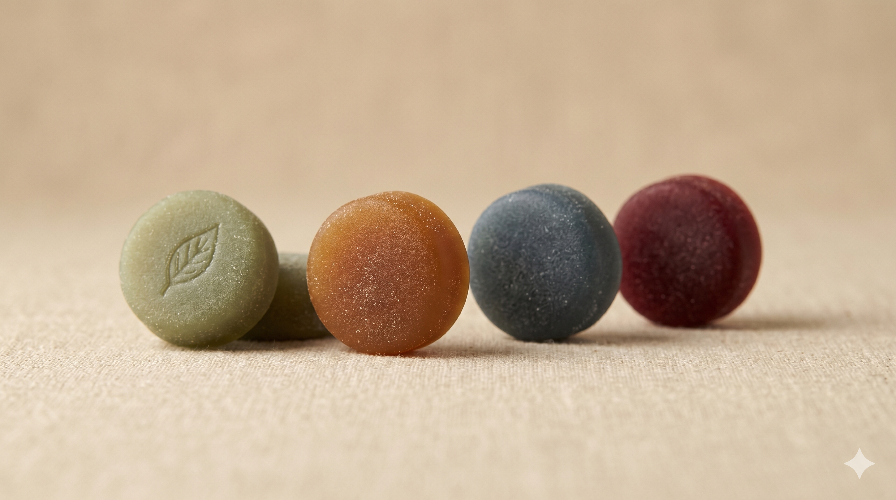

Every ingredient in FNCK GUM is selected based on clinical research and traditional use. No fairy dust. No proprietary blends. Just transparent dosages that match the studies.
Key Ingredients
An amino acid found in green tea leaves. Promotes alpha brain wave activity — the "flow state" between relaxation and alertness. Dose effective: 50–200mg. We use 50mg per serving for daily stacking without drowsiness.
Ayurvedic herb used for centuries to enhance memory and cognitive function. Clinical studies show improvement in memory retention after 8–12 weeks of consistent use. Standardized to 50% bacosides.
Full-spectrum root extract with the highest concentration of withanolides on the market. Shown to reduce cortisol by up to 27% in stressed adults. The gold standard of ashwagandha extracts.
Peruvian root vegetable traditionally used to support energy, mood, and libido. Our 4:1 extract delivers the equivalent of 400mg of raw maca per serving. Non-hormonal, non-stimulant.
Amazonian seed containing natural caffeine bound to tannins, resulting in slower release than coffee. No crash, no jitters. Combined with L-theanine for smooth, sustained energy.
Traditional Mexican herb used for vitality and mood. Often paired with maca in formulations targeting intimate wellness. Clinically studied for its adaptogenic properties.
